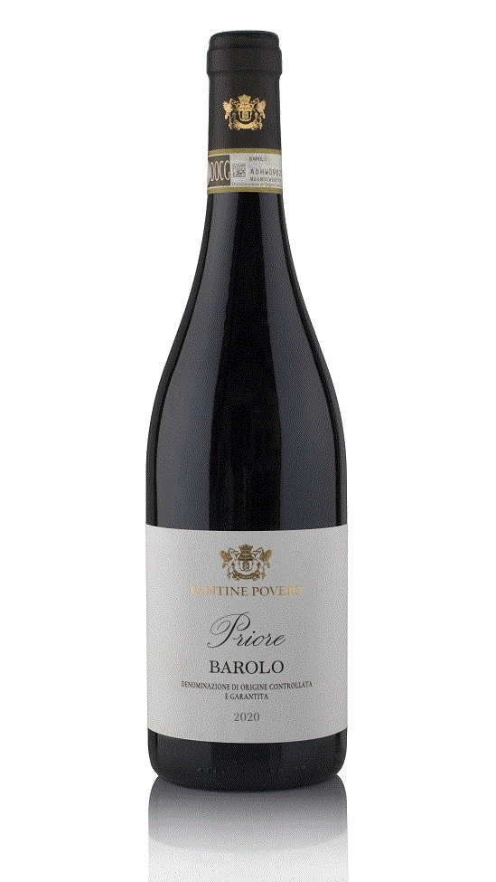

Barolo “Priore” 2021 – Cantine Povero
30€
Vino rosso strutturato da invecchiamento – Vitigno: 100% Nebbiolo
Il Nebbiolo viene raccolto a piena maturazione selezionando i grappoli migliori. Dopo la fermentazione in vasche di acciaio, il vino affina tradizionalmente in botti di legno, sviluppando complessità aromatica, tannini eleganti e grande longevità. L’annata 2021 unisce freschezza, struttura e intensa profondità aromatica.
- Colore: rosso granato con riflessi aranciati nel tempo
- Profumi: rosa appassita, viola, frutti rossi maturi, spezie dolci, liquirizia
- Gusto: pieno, tannico ma armonico, di lunga persistenza
Abbinamenti consigliati: carni rosse, brasati, formaggi stagionati e salumi di carattere come il Salame di Pavia.